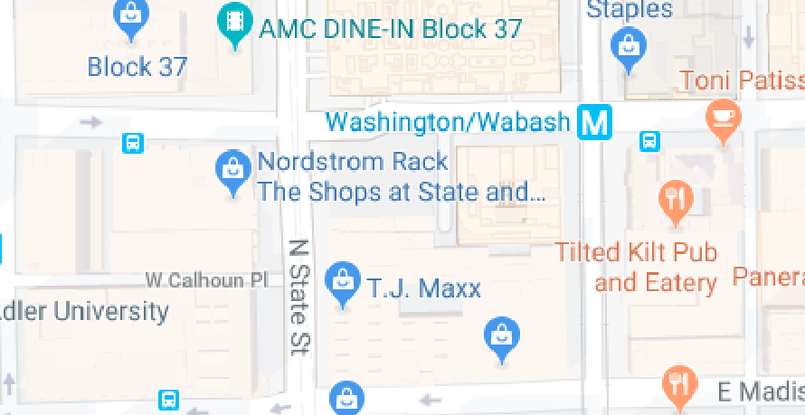
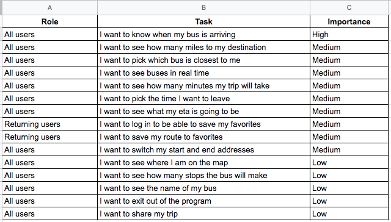

This is a bus app that was developed to help city transit officials solve an expansion problem. My role in this project was the UX designer. I was soley responsible for the discovery, strategy, information architecture, visual design, and development of Busybus.
The local city transit officials are expanding and numerous bus routes have been recently added. The difficulty is that many routes stop at the same bus stop. Riders are confused as to what bus they should take and what time the bus will arive. Riders are mostly complaining about the bus stop at Washington and State, which has seven bus lines serving the stop.
This responsive protoype helps the once confused and frustrated busriders with a simple and clear layout.
The user has access to the bus number, location, and the amount of time before the bus will arive.
View PrototypeThe differentiator for someone to enter this market place would be:
The goal of Margie's persona was to help us empathize with a user who has other people depending on her and emphasize the importance of making sure people like her do not miss thier bus.
Frustration: Margie has to go from work to her see her mother, who has alzheimers, across town in a very short amount of time. When there is a bus delay or her bus app says that the bus is almost there and the bus never comes, it causes a lot of stress for Margie. She then has to wait for the next bus and is not sure when it will come. She is thinking about moving her kids and mother into the country to avoid all the added stress of commuting on a bus.
What are the most important things the user is trying to do? Articulating what developers need to focus on first is important to help keep the project on schedule.
One of the users were confused about the first screen. They did not know it was a bus app. I chose to do the design based off the middle screen, because it solved the problem the users were having on Washington and State. After testing users on this screen, I designed the prototype to clearly tell what bus, where to, and how long until pickup.
Comments that would be helpful for further development are shown below:
“Will the app know your location, or will you have to enter a start location?"
"It would be helpful if it picked the nearest bus stop for you, once you enter your destination.”
I realized the 'Reroute' and 'Out of Service' destinations did not make sense to be the same text color as the routes that were available. I changed the text color to silver to help the user see those two divs were different, and to avoid pressing them if that were their destination.
It is hard to find bus riders in the suburbs! Most people near Boston take the train.
Going to the city to find users at a bustop or bus station would have given me much more data to use in my research.
Please email or call if you would like to hear more!
318.792.2444
Based in The Greater Boston Area, Massachusetts.
View Prototype